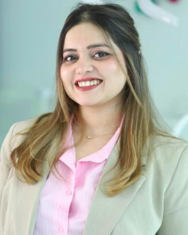
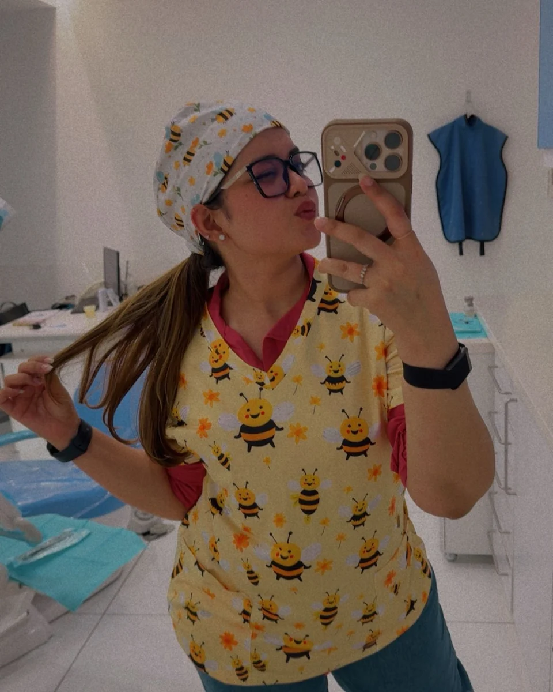

Master of Dental Surgery
Pediatric & Preventive Dentistry
Rajiv Gandhi University of Health Sciences
Specialist Pediatric & Preventive Dentist.
Here for your child, and for you.
My clinical work spans India and the UAE, caring for children from their earliest dental visits through the years of growing teeth and changing smiles.
Come say hello
A little patience goes a long way.Their worries, their personality, their way of communicating — it all matters.
My experience includes behaviour guidance for anxious children and care for children with additional healthcare needs. I focus on clear communication with parents, prevention and treatment planned around the individual child.
From an everyday check-up to more involved care, I want families to understand the findings and the choices available to them.
DHA & DOH licensed.
Over 11 years of clinical experience across India and the UAE.
Pediatric & Preventive Dentistry
Rajiv Gandhi University of Health Sciences
Dr. D. Y. Patil Deemed University
Nitrous Oxide Conscious Sedation · CAPP
Interceptive & myofunctional orthodontics · Myobrace
Hospital-based dentistry
Basic, pediatric and advanced life-support training.
Clinical care, clinic leadership
and a continuing focus on children.
Current practice. Specialist Pediatric Dentist at Al Raha Mall since January 2025.
Previous part-time practice at Hellenic Dental Clinic, Bay Avenue Dental Centre and Dr. Sai Ganesh Medical Centre.
Part-time Specialist Pediatric Dentist in Dubai Silicon Oasis.
Pediatric Dentist and Clinic Head.
Pediatric dentistry at Dr. Patil’s Dental Studio, Khopoli, alongside external consultations.
We can talk in English, Hindi, Marathi or Kannada.
Let’s start a conversation
Get to know
my world.
For more of Dr. Kashmira’s day-to-day work and conversations about children’s dentistry, find her on Instagram.
@dr.kashmirapawar ↗
Follow along on Instagram ↗